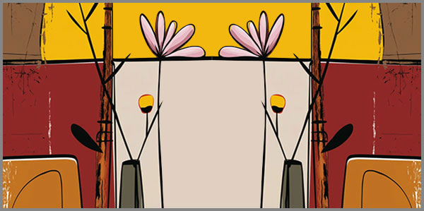

25. Բարդիների Սոսափի Քաղաքը
 |
Գերմանացի ֆիզիկոս Վերներ Հեյզենբերգը 1927 թվականին, քվանտային մեխանիկայի ոլորտում կատարեց մի աշխարհացունց հայտնագործություն, որի համաձայն՝ անհնար է դառնում միաժամանակ ճշգրիտ որոշել, կամ հաշվել միկրոմասնիկի դիրքն ու արագությունը միաժամանակ։ Սա նշանակում է՝ որքան ճշգրիտ ենք չափում մասնիկի գտնվելու տեղը‚ այնքան անորոշ է դառնում նրա արագությունը‚ և հակառակը։ Այս հայտնագործությունը խախտեց դասական ֆիզիկայի հիմնարար սկզբունքներից մեկը՝ դետերմինիզմը‚ համաձայն որի, իմանալով համակարգի ներկա վիճակը‚ կարելի է ճշգրիտ կանխատեսել նրա ապագան։ Քվանտային անորոշությունը ցույց տվեց‚ որ բնության մեջ կան հիմնարար սահմանափակումներ‚ որոնք անհնար է շրջանցել։
Այս սկզբունքը մտնելով շրջանառության մեջ որպես Հեյզենբերգի անորոշությունների սկզբունք՝ ոչ միայն ցնցեց գիտական աշխարհը ի ցույց դնելով բնության կողմից դրված սահմանափակումները, այլև առաջացրեց բուռն փիլիսոփայակն հարցադրումներ կապված մեր գիտակցության՝ ինչ որ երևույթների մի քանի հատկանիշների միաժամանակյա ճշգրիտ ընկալման հետ:
Ամառվա սովորական կիզիչ օրերն այս քաղաքում անցնում էին ճամփեզրերին խիտ տնկած բարդիների ստվերում տեղադրված նստարաններից մեկին թվացյալ անտարբերությամբ նստածի համար կարծես թե միալար ու տաղտուկ: Այնինչ նա՝ բարդու տերևի ցողունն ատամների տակ սեղմած, դրա հաճելի դառնահամը վայելելով, ամենափոքր իսկ զեփյուռից սոսափող բարդիների ստվերում, ապրում էր իր երազանքնարի անկրկնելի ու կատարյալ աշխարհում:
Ամառվա սովորական կիզիչ օրերն այս քաղաքում անցնում էին ճամփեզրերին խիտ տնկած բարդիների ստվերում: Քաղաքը, որն արդեն տևական ժամանակ է ինչ խմում էր իր հոգնածությունն ու հուսահատությունը, կարծես կորչում էր այս մաքուր ու անխոս դաշտում՝ առանց որևէ գրգռող ձայնի կամ շարժման: Բայց նա՝ նստած բարդու տերևի ցողունն ատամների տակ սեղմած, դրա հաճելի դառնահամը վայելելով, ամենափոքր իսկ զեփյուռից սոսափող բարդիների ստվերում, ապրում էր իր երազանքնարի անկրկնելի ու կատարյալ աշխարհում: Այստեղ, այս լռության մեջ, նրա հուզմունքն ու վախերը դառնում էին անորոշ, բայց միաժամանակ տիրող և անխուսափելի։ Կյանքը դառնում էր մի փոքրիկ շրջափուլ, որտեղ ոչինչ չէր ընդհատում այն միջավայրը, որը նա ստեղծել էր իր ներսում:
Այդ պահերին, երբ նա վերլուծում էր իր հոգու վիճակը, երբ աչքերը նայում ու տեսնում էին միայն բարդու սոսափող տերևները, նա կարծես իրենից վերանում և տարալուծվում էր անսահմանության մեջ: Բարդիների սոսափը նրա համար պարզապես օդի թեթև շարժում չէր: Այդ սոսափը նրա կյանքի բարեմաղթանքն ու էության անբաժանելի մասն էր, առանց որի նա չէր կարող։ Ու այդ սոսափը՝ այդ թեթև, բայց մշտապես ներկա լինելու աղոթքը, լիովին համակեցնում էր իր աշխարհը՝ դարձնելով այն մի քիչ անխոս, մի քիչ խորհրդավոր ու միաժամանակ խաղաղ։
Այս խաղաղության մեջ նա չէր փորձում փախչել՝ գիտակցելով, որ ամեն առօրյա տեղաշարժ, ամեն գործառնական քայլ և անցում՝ միայն ավելացնում են մի նոր բարդացնող շերտ այն հստակության մեջ, որը նա փնտրում էր իր կյանքում ու իր լինելու մեջ։ Մինչ նա նստած էր թվացյալ խաղաղությամբ, մտքերը մի բազմակի շրջապտույտով, անցյան էին վերհանում նրա ենթագիտակցությունից, որտեղ ամեն ինչ ավելի պարզ էր ու գրավիչ։ Ու այսպես երկար ձգվելով ծորում էր օրը, նորից ու նորից դողալով որպես հաճելի մի սոսափ, բարդիների սոսափի ներքո՝ նրա սրտի լռության մեջ:
Ամառվա սովորական կիզիչ օրերն այս քաղաքում անցնում էին ճամփեզրերին խիտ տնկած բարդիների ստվերում տեղադրված նստարաններից մեկին թվացյալ անտարբերությամբ նստածի համար կարծես թե միալար ու տաղտուկ: Այնինչ նա՝ բարդու տերևի ցողունն ատամների տակ սեղմած, դրա հաճելի դառնահամը վայելելով, ամենափոքր իսկ զեփյուռից սոսափող բարդիների ստվերում, ապրում էր իր երազանքնարի անկրկնելի ու կատարյալ աշխարհում:
Քաղաքում օրերն անցնում էին նույն եռանդով, անխոս ու կարծես անտարբեր: Սակայն հենց այդ անտարբերության մեջ հակասություն էր ծնվում: Նա նստած էր, աչքերը փակ՝ հոգում զգալով սոսափը, բայց միաժամանակ չէր կարողանում բացատրել, թե ինչու այդ նույն սոսափը, որը նրա համար արդեն դարձել է փախչելու միակ միջոցը, հակառակի պես առաջացնում է մի ներքին խառնաշփոթ։ Այս անվերջ պտույտը, շփոթված, բայց միաժամանակ հստակ ուրվագծված լինելու մասին այս միտքը, անընդհատ վերադարձնում էր նրան դեպի նույն վայրը: Բայց ամեն անգամ, երբ նա փակելով աչքերը փորձում էր հասնել միաժամանակյա անդորրի, տարօրինակորեն ավելի շուտ գտնում էր իրեն մի անհանգիստ կետում՝ սկսելով կորցնել իր տեղը իր երազանքների աշխարհում։
Ամեն անգամ, երբ նա փորձում էր որսալ միաժամանակյա մտքերը, որոնք թրթռում էին սոսափից առաջ, երևույթները վերածվում էին անբաժանելի մի մեծ կծիկի: Այս մտքերը կարծես միաժամանակ ստեղծելով երկու տարբեր իրականություններ՝ մեկը հստակ ու ընկալելի, մյուսը իր բոլոր իմաստներով անհասանելի, ստեղծում էին երկու անտեսանելի թակարդներ՝ մեկը ցանկալի, իսկ մյուսը լի անտեսանելի բազում ճեղքերով: Բայց կարծես դրանք միշտ հանդուրժում էին իրար՝ ձևացնելով, որ երկուսն էլ գոյություն ունեն, երբեմն աննշան, երբեմն հավասարազոր գայթակղիչ ու հզոր։
Նրա միտքն անընդհատ պտտվում էր, փորձելով գտնել մի կենտրոն՝ մի թեկուզ խախուտ հենման կետ, բայց որքան նա մոտենում էր այդ բաղձալի կենտրոնին, այնքան այն ավելի էր հեռանում։ Երբ նա զգում էր, որ իսկապես շոշափում է այն միտքը, որը պահանջում էր իր ամբողջ ուշադրությունը, մյուսը հայտնվում էր կողքին՝ անկապ, բայց վճռական։
Ահա թե ինչու, երբ մի միտք կարծես ընկալվում էր, մյուսը կորում էր՝ դնելով նրան այնպիսի անորոշության մեջ, որ մի պահ կարծես չէր կարողանում հասկանալ թե որն է այն շարժառիթը, որ պահում է իրեն երկու բարդ ու անհամատեղելի հասկացողությունների միջև։ Այս անդադար վիճակի սփոփանքը նա փնտրում էր մի փախուստի մեջ, որը որ չկար:
Ամառվա սովորական կիզիչ օրերն այս քաղաքում անցնում էին ճամփեզրերին խիտ տնկած բարդիների ստվերում տեղադրված նստարաններից մեկին թվացյալ անտարբերությամբ նստածի համար կարծես թե միալար ու տաղտուկ: Այնինչ նա՝ բարդու տերևի ցողունն ատամների տակ սեղմած, դրա հաճելի դառնահամը վայելելով, ամենափոքր իսկ զեփյուռից սոսափող բարդիների ստվերում, ապրում էր իր երազանքնարի անկրկնելի ու կատարյալ աշխարհում:
Սկսվեց: Պատերազմի գույժը կանգնեցրեց բարդիների սոսափն ու ժամանակը միաժամանակ: Ամեն ինչ քարացավ: Նույնիսկ կիզիչ արևը մթագնեց այս ցնցող իրադրությունից: Կանգնեցին նաև նրա մտքի հոսքերը, որոնք քիչ առաջ պատեհ-անպատեհ դուրս էին հորդում չգիտես որ խորքերից: Երկար նստած մնալուց ընդարմացած, նա փորձեց ուղղվել ու դժվարությամբ թե դժկամությամբ վեր կենալով լքեց իր փախուստի վայրը, մոլոր քայլերն ուղղելով ուր պատահի: Այս պահին նրան հուզում էր միայն մի բան՝ տեսնես որքան կտևի այս անպատեհ վիճակը, ինչքան…ուղեղի լարումից և չկենտրոնացած մտքի բաց մնացած լուսանցքներից երբեմն վրա էին տալիս սարսափելի տեսրաններ, որոնք նա չեր ուզում ապրել ու անընդհատ վանում էր դրանք: Վանում էր, վանում էր, վանում էր… Չհասկանալով էլ թե ինչպես, քայլերը նրան տուն էին բերել, որտեղից նա փախել ու պատսպարվել էր բարդիների սոսափի տակ:
Ամառվա սովորական կիզիչ օրերն այս քաղաքում անցնում էին ճամփեզրերին խիտ տնկած բարդիների ստվերում տեղադրված նստարաններից մեկին թվացյալ անտարբերությամբ նստածի համար կարծես թե միալար ու տաղտուկ: Այնինչ նա՝ բարդու տերևի ցողունն ատամների տակ սեղմած, դրա հաճելի դառնահամը վայելելով, ամենափոքր իսկ զեփյուռից սոսափող բարդիների ստվերում, ապրում էր իր երազանքնարի անկրկնելի ու կատարյալ աշխարհում:
Չվերջացող պատերազմը երկար գնում էր: Քաղաքում ամեն օր թաղում էր: ամեն օր սուք, ամեն օր վիշտ, ամեն օր սով, ամեն օր ցուրտ: Ցուրտ էր տներում ու հոգիներում: Էներգետիկ ճգնաժամից կաթվածահար էր եղել ամեն ինչ: Բարդիների ամառվա տապի երբեմնի սոսափը մնալով լոկ որպես հուշ փախուստի, օրեցօր դառնում էր հզոր երազանք:
Պատերազմը գնալով խեղդում էր քաղաքը։ Ցրտից ու սովից տապալվող մարդիկ, խելակորույս դաժանությամբ սկսեցին կտրատել բարդիները տներում վառարանները վառելու համար: Այս մոլուցքն այնքան ուժեղ էր, որ ոչ մի ծառ կանգուն չմնաց: Նա քայլում էր նույն ճամփեզրով, որտեղ ամառները երբևէ լի էին եղել բարդիների անուշ դողով։ Այժմ այդ դողը մարել էր։ Նա կանգնում էր նույն նստարանի մոտ, բայց չէր համարձակվում նստել։ Թվում էր, թե նստարանը հիշում է իր երազանքների ծանրությունը, իսկ ինքը այլևս չունի այն երազանքները, որոնց մեջ կարող էր փախչել։ Բայց երբեմն… երբ քամին տարօրինակ թեքվում էր, նա լսում էր նույն սոսափն ինչպես առաջ։ Եվ այդ աննշան դողը, թեթև թրթռումը, նրան մի ակնթարթով վերադարձնում էր նախկին խաղաղության մեջ։ Մեկ վայրկյան, երկու, հետո նորից փակվում էր ամեն ինչ։ Սոսափը վերածվել էր հիշողության, կիսատ մնացած աղոթքի, որը միշտ ընդհատվում էր իրականության կողմից։
Նրա ներսում էլ էին պատերազմում երկու հոսանքներ։ Մեկը՝ հուսահատությունն ու դառը ճշմարտությունը, մյուսը՝ դեռ չմարված երազանքը, որը փրկվում էր ամեն անգամ, երբ բարդիներից մեկը նրա ներսում համարձակվում էր դողալ։ Նա գիտեր՝ պատերազմը կարող է կոտրել քաղաքը, մարդկանց, անգամ հիշողությունները։ Բայց եթե բարդիները գոնե դեռ սոսափում են ներսում, ապա ինչ–որ տեղ դեռ կա մի թաքուն տարածք, որտեղ հնարավոր է փախչել ու ապրել։
Քաղաքի փողոցները լցվել էին լուռ մարդկանցով։ Նրանց դեմքերը կարծես նույն գույնն էին ստացել՝ մոխրագույն, հարթ ու անարտահայտիչ։ Ոչ ոք չէր խոսում բարձր ձայնով: Մարդիկ սովորել էին շշնջալ, որպեսզի չխախտեն դանդաղ ընթացող սուգի հոսքը։ Սուգն ինքը դարձել էր քաղաքի լեզուն։ Սուգն էր գրվում պատերի ճաքերի մեջ, սուգն էր քայլում մաշված կոշիկների տակ, սուգն էր թափառում պատուհանների ետևում։
Նա քայլում էր նույն ճանապարհով՝ նայելով այդ դեմքերին, և փորձում էր հասկանալ՝ իսկ ո՞րն է իր դեմքը։ Ո՞ւմ է նման իր հայացքը։ Արդյո՞ք նա էլ է դարձել այնպիսի մոխրագույն ստվեր, ինչպիսին բոլորն են։ Թվում էր՝ այո։ Բայց հենց այդ պահին, մի շնչի պես մտքում անցավ բարդիների թեթև դողը և այդ կարճատև դողը ներսում մի այլ խառնաշփոթ առաջացրեց։
Եթե սոսափը դեռ կա, ուրեմն ես էլ դեռ գոյություն ունեմ, մտածեց նա։ Բայց ներսում կրկնվեց նույն հարցը՝ իսկ եթե սոսափն էլ մարի, ինչի՞ վրա եմ հենվելու։
Գիշերները նա այլևս չէր քնում։ Նստում էր պատուհանի մոտ, ու երկար նայում մթությանը։ Երբեմն թվում էր, թե հեռվից լսվում է բարդիների սոսափը ։ Այդ ձայնը գալիս էր ոչ թե դրսից, այլ ներսից։ Թվում էր՝ իր իսկ երակների մեջ են թրթռում տերևները։ Այդ պահերին նա այլևս չէր տարբերում, որտեղ է պատերազմը՝ դրսո՞ւմ, թե՞ իր ներսում։ Գուցե տարբերություն էլ չկար։ Եվ ամեն անգամ նա իր մտքում կրկնում էր՝ «Եթե բարդիները չլռեն, մենք էլ չենք լռի։ Եթե սոսափը դեռ կա, ապա կյանքը չի ավարտվել»։ Ամառվա սովորական կիզիչ օրերն այս քաղաքում այլևս չէին անցնում նույն ձևով։ Ճամփեզրերին խիտ տնկված բարդիների ստվերում նստարաններն անշարժ էին մնացել, սպասելով նրանց, որ այլևս չէին վերադառնալու։ Քամին շարունակում էր շարժել տերևները, բայց երևակայական սոսափն այլևս չէր հիշեցնում երազանքի մասին՝այն նմանվում էր հառաչանքի այնպես, կարծես ժամանակը կուլ էր տվել դրա հանգստությունը։
Տարիներն անցան։
Կտրված բարդիների խորը արմատներից նոր շիվեր բարձրացան։ Դրանք ճկուն էին, բայց և համառ, ու իրենց կանաչ թրթիռով կարծես վկայում էին, որ ոչինչ չի վերջանում ամբողջությամբ։ Քաղաքի հոգնած դեմքին նոր շունչ էր ավելացել, բայց ոչ հին անմեղությամբ՝ այլ փորձության ու ցավի միջով անցած լռությամբ։
Նա՝ արդեն տարիքն առած, դարձյալ նստած էր իր նստարանին։ Նույն բարդիների ստվերի տակ, բայց այլ զգացումով։ Եթե մի ժամանակ այստեղ էր գալիս փախչելու իր ներքին խառնաշփոթից, հիմա նա այստեղ է մնալու համար։ Մնում էր, որովհետև այլևս չեր փնտրում փախուստ։ Բարդիների նոր սոսափը դարձել էր նրա խաղաղության հավաստիքը՝ հիշեցում, որ կյանքը նույնիսկ կոտրվելուց հետո շարունակում է աճել։ Ու այդ սոսափի ներքո՝ հին ցավի ու նոր ապրելու համառության խառնուրդում, նա հասկանում էր, որ ինքն էլ այդ բարդիների նման է՝ կտրած, բայց չվերջացած։
Վերջաբան առանց ավարտի
Եվ երբ վերջին անգամ քամին անցավ քաղաքով, բարդիների սոսափը այլևս լոկ հիշողություն չէր։ Այն դարձավ հուշի ու կյանքի անքակտելի մի ձայն, որ ապրում էր և՛ տերևներում, և՛ նրա հոգում։ Նա զգում էր, որ սոսափը ոչ թե դրսից է գալիս, այլ ներսից: Դա իր սրտի շարունակվող զարկն էր։ Այդ պահին նա հասկացավ՝ ժամանակը չի փախչում, ոչ էլ կանգնում է: Այն պարզապես հոսում է, ինչպես սոսափը՝ անընդհատ և հավերժ: Եվ եթե կա մի բան, որ մնում է, ապա դա ոչ թե հին վախերն են կամ կորսված օրերը, այլ հենց սոսափի ձայնը՝ լուռ, բայց համառ հիշեցում, որ կյանքը շարունակվում է։ Ամառվա սովորական կիզիչ օրերն այս քաղաքում անցնում էին ճամփեզրերին խիտ տնկած բարդիների ստվերում տեղադրված նստարաններից մեկին թվացյալ անտարբերությամբ նստածի համար կարծես թե միալար ու տաղտուկ: Այնինչ նա՝ բարդու տերևի ցողունն ատամների տակ սեղմած, դրա հաճելի դառնահամը վայելելով, ամենափոքր իսկ զեփյուռից սոսափող բարդիների ստվերում, ապրում էր իր երազանքնարի անկրկնելի ու կատարյալ աշխարհում:
«Մենք կառուցում ենք կամուրջներ այնտեղ, ուր մյուսները տեսնում են միայն անդունդներ։»
© 2026 Մոնումենտալ Կամուրջ: Այս կայքի բովանդակությամբ կարող եք ազատորեն կիսվել համացանցում՝ հղում տալով սկզբնաղբյուրին: Տպելու, տպագրելու կամ գիրք կազմելու միջոցով, կամ այլ ֆիզիկական ձևով և որևէ տեխնոլոգիական կրիչով տարածելը առանց հեղինակի գրավոր համաձայնության արգելվում է: Գիտական, կրթական կամ ստեղծագործական աշխատանքներում մեջբերումները թույլատրելի են պայմանով, որ պարտադիր պետք է նշվի կոնկրետ էջի ամբողջական հասցեն (URL) և աշխատության վերնագիրը: Առանց հեղինակի գրավոր համաձայնության՝ արգելվում է նաև կայքի նյութերի թարգմանությունը որևէ լեզվով և դրանց տարածումը այլ լեզուներով: